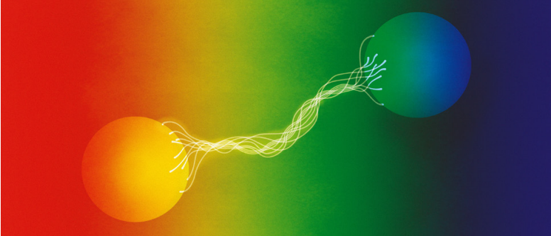
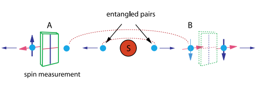

Emaranhamento Quântico — EPR, Teorema de Bell, Nobel 2022 e Circuitos
Um artigo didático e auto-contido sobre as bases conceituais e experimentais do emaranhamento, as desigualdades de Bell e como criar estados emaranhados em circuitos quânticos usando portas como Hadamard e CNOT.
1. Introdução ao emaranhamento
Emaranhamento (entanglement) é a correlação quântica entre duas ou mais partículas onde o estado global não se factoriza em estados locais. Em termos matemáticos, um estado de duas partículas \,\(|\psi\rangle\) é emaranhado se não existir \(|\phi_A\rangle\) e \(|\phi_B\rangle\) tais que \(|\psi\rangle = |\phi_A\rangle\otimes|\phi_B\rangle\).
2. O paradoxo EPR
Em 1935, Einstein, Podolsky e Rosen (EPR) propuseram um argumento para mostrar que a mecânica quântica, tal como era interpretada na época, parecia incompleta. Eles consideraram pares de partículas com correlações perfeitas e concluíram que uma descrição de variáveis ocultas locais poderia ser necessária para recuperar a realidade das propriedades medíveis.
Um exemplo muito usado é o estado singlete (para spins):
Esse estado tem correlações perfeitas: se A mede \(S_z\) e obtém \(+\tfrac{\hbar}{2}\), B terá automaticamente \(-\tfrac{\hbar}{2}\), mesmo que esteja distante — o que levou EPR a questionar a completude da teoria.
3. Teorema de Bell e a desigualdade CHSH
John Bell (1964) mostrou que qualquer teoria de variáveis locais escondidas satisfaz certas desigualdades que a mecânica quântica pode violar — portanto, esses modelos locais não reproduzem todas as previsões quânticas.
Uma forma prática usada em experimentos é a desigualdade CHSH. Definindo correlações \(E(a,b)\) entre medidas com configurações \(a\) (em A) e \(b\) (em B), a combinação
deve satisfazer para qualquer teoria local realista
A mecânica quântica prevê que para certas escolhas de ângulos (por ex. diferenças de 22.5°) o valor máximo alcançável é \(|S|=2\sqrt{2}\), violando a desigualdade local.
4. Três experimentos-chave (que pavimentaram o Nobel de 2022)
O Prêmio Nobel de Física de 2022 reconheceu três cientistas — John F. Clauser, Alain Aspect e Anton Zeilinger — por experimentos inovadores que demonstraram de forma inequívoca o emaranhamento quântico e suas implicações não locais. Cada um contribuiu de forma única para testar e aplicar o teorema de Bell.
Freedman & Clauser (1972)
Clauser, em colaboração com Stuart Freedman, realizou o primeiro teste experimental direto da desigualdade de Bell usando pares de fótons emitidos em uma transição atômica em cascata de cálcio. O aparato envolvia polarizadores fixos e detectores que mediam coincidências entre polarizações dos fótons. O resultado obtido foi uma clara violação das previsões das teorias locais de variáveis ocultas, confirmando as previsões da mecânica quântica.
Esse experimento foi pioneiro por transformar uma questão filosófica em um teste físico mensurável. Apesar de ainda existir a chamada “locality loophole”, ele abriu caminho para experimentos mais refinados.
Alain Aspect (1981–1982)
Aspect e sua equipe, no Institut d’Optique em Paris, realizaram uma série de experimentos fundamentais que resolveram lacunas deixadas por Clauser. Em particular, eles utilizaram moduladores acusto-ópticos capazes de alterar a orientação dos polarizadores durante o voo dos fótons, garantindo que a escolha de medição em A não pudesse influenciar causalmente o resultado em B.
Os resultados reforçaram a violação das desigualdades de Bell, fornecendo uma evidência mais robusta contra qualquer explicação local realista. Os experimentos de Aspect foram considerados os mais convincentes de sua época e estabeleceram o emaranhamento como uma característica real e verificável da natureza.
Anton Zeilinger (década de 1990)
Zeilinger e sua equipe levaram o emaranhamento a um novo patamar, explorando suas aplicações em comunicação e informação quântica. Em 1997, sua equipe demonstrou o teletransporte quântico de estados de fótons — um processo em que o estado quântico de uma partícula é transferido para outra distante, sem transporte físico da partícula em si. Além disso, ele conduziu experimentos de entanglement swapping (troca de emaranhamento), demonstrando a criação de correlações entre partículas que nunca interagiram diretamente.
Esses experimentos mostraram que o emaranhamento é não apenas um fenômeno fundamental, mas também um recurso prático para tecnologias emergentes como criptografia quântica, computação quântica e comunicação segura.
5. O gato fantasma da física quântica — Quantum Imaging with Undetected Photons
O chamado “gato fantasma” é uma referência curiosa à técnica de Quantum Imaging with Undetected Photons, desenvolvida por Anton Zeilinger e colaboradores em 2014. A ideia é obter a imagem de um objeto usando fótons que nunca o tocaram diretamente — um fenômeno possível graças ao emaranhamento quântico.
O experimento funciona usando pares de fótons emaranhados criados por conversão paramétrica. Um fóton (o signal) interage com o objeto, enquanto o outro (o idler) é detectado em um sistema de imagem. Apesar de o fóton detectado nunca ter tocado o objeto, sua correlação quântica com o fóton que interagiu contém as informações necessárias para formar a imagem.
Essa técnica demonstra o poder das correlações quânticas e sua utilidade em aplicações práticas, como imageamento biológico sensível e sensores quânticos. É chamada popularmente de “imagem fantasma” porque o objeto aparece reconstruído a partir de partículas que nunca o viram — um verdadeiro “gato de Schrödinger fotográfico”.
(Experimento: M. Genovese et al., Science, 2014 — demonstração de imageamento com fótons não detectados)
6. Circuitos quânticos — gerar um estado emaranhado com Hadamard + CNOT
Em computação quântica de porta, a forma mais simples de criar um par emaranhado (estado Bell) é aplicar uma porta Hadamard em um qubit seguido por uma CNOT controlada por esse qubit:

7. Conclusão e caminhos para aprofundar
O emaranhamento deixou de ser apenas um paradoxo filosófico para servir de base a tecnologias como criptografia, comunicação e computação quântica. O fenômeno do “gato fantasma” mostra como as correlações quânticas permitem acessar informação de modos não clássicos.
8. Referências bibliográficas
Quantum imaging with undetected photonsHow entanglement has become a powerful tool (pdf)
“For experiments with entangled photons, establishing the violation of Bell inequalities and pioneering quantum information science” (pdf)